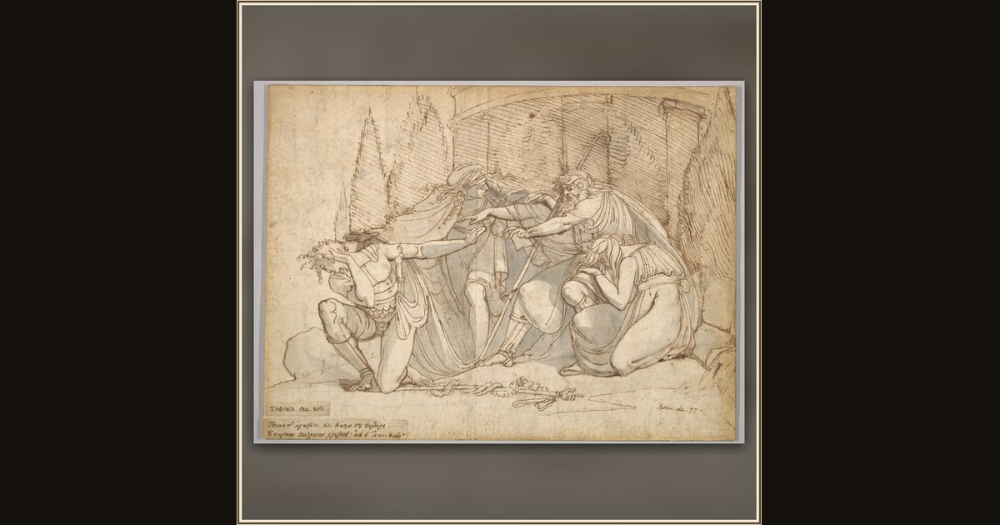

Oedipus at Colonus, Cursing his Son Polynices
Henry Fuseli · 1777 · met
Fuseli's drawing shows Oedipus thrusting away the kneeling Polynices while a daughter weeps at his side; Oedipus calls down curses on his son (1386). Explore its place in Sophocles's Plays, Oedipus at Colonus, line 1425.